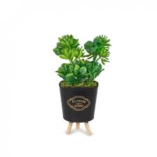

Ev Bitkileri

Adeta cennet gibi her yeri çiçekle dolu seraları gezdiğinizde, envaiçeşit bitki ile tanışırsınız.
Kaktüslü bitkiler
Her mevsim yeşil kalan bitkiler
Çiçekli bitkiler
Minyatür dekoratif bitkiler
Dikenli bitkiler olmak üzere ev için bitkiler işte o seralarda üretilmektedir.
Çeşitler
- Skulen
- menekşe
- cenan
- fesleğen
- antoryum